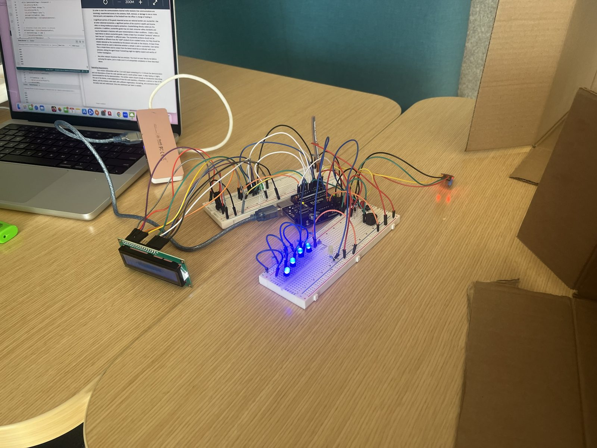
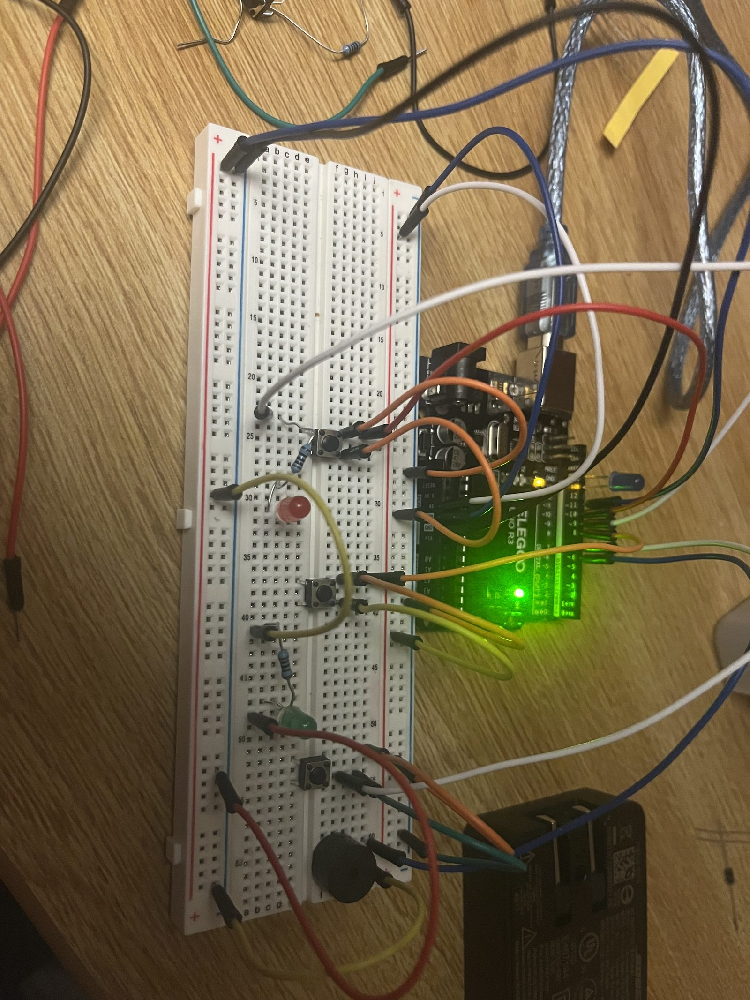

Sheet 01 / 04
Fall 2024
Arduino Spy Museum
Northeastern University — General Engineering (ENGW 1111)



Overview
For Northeastern's General Engineering course, I built a cardboard "spy museum" — an interactive exhibit imagined as a display for a (fictional) National Espionage Unit, using an Arduino to bring each station to life. Visitors were greeted by an LCD screen before moving through a set of hands-on, sensor-triggered exhibits.
How it works
The enclosure housed a set of Sparkfun kit components, each mapped to a different "exhibit" inside the box:
- LEDs and push buttons for interactive, visitor-triggered displays
- A photoresistor and flex sensor to detect movement and touch
- A thermal sensor for a temperature-reactive exhibit
- An LCD screen and speaker to greet and narrate each station
All of it was driven by C++ Arduino code I wrote to sequence the sensors and outputs together into one coherent experience rather than a set of disconnected demos.
Presenting it
I presented the finished museum to the class and walked classmates through each station, encouraging them to interact with the sensors themselves — which ended up being one of the more useful parts of the project, since watching people use it unprompted surfaced a few wiring quirks I hadn't caught during testing.